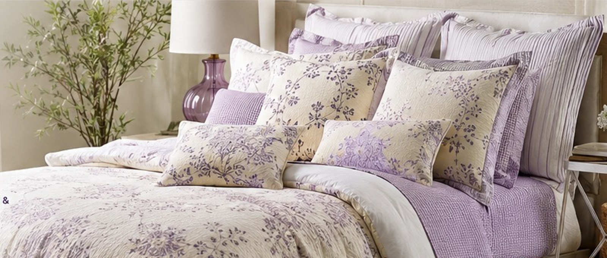
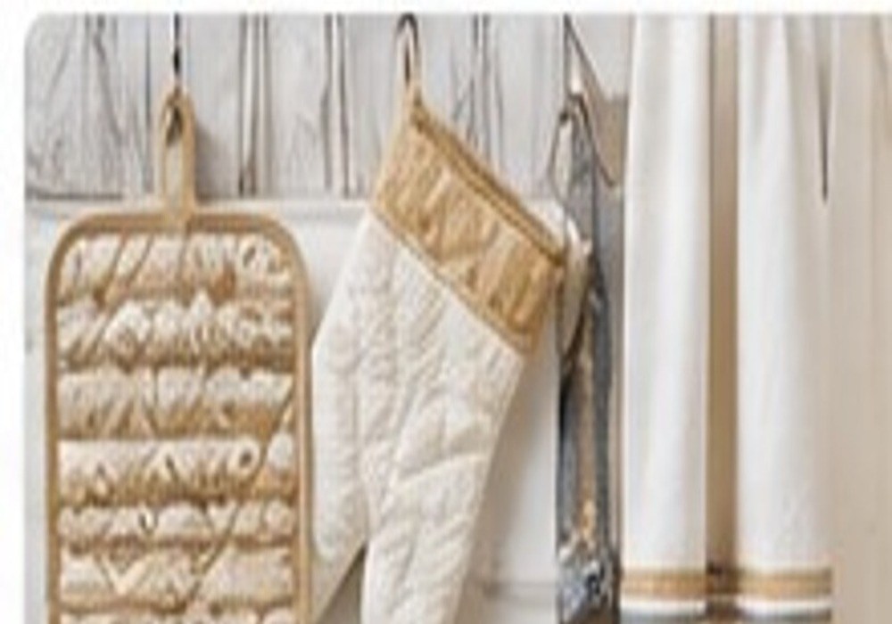
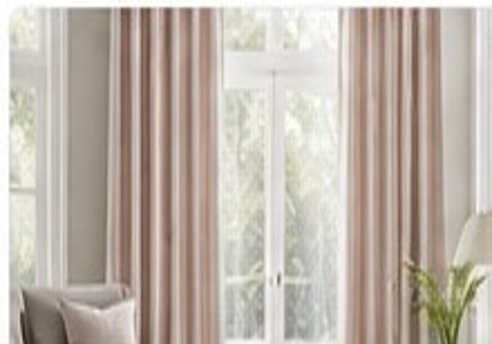

Audited Manufacturing Network
Match each order with suitable manufacturing expertise, technical capability and production capacity.
ESTABLISHED 2007 KARUR, TAMIL NADU, INDIA
REAL IMPEX coordinates product development, sourcing, audited manufacturing, quality assurance, packaging and export execution for international textile buyers.
* Figures represent network capability or typical starting points where applicable; final capacity, MOQ and market coverage vary by product and order.
THE REAL IMPEX STORY
REAL IMPEX was established in Karur in 2007. Founder Sundararajan S, a Physics graduate with a strong interest in home textiles, moved from more than a decade of professional experience into building a textile business of his own.
That beginning became a long-term commitment to understanding products, buyers and the manufacturing ecosystem around them. Today, REAL IMPEX combines in-house capabilities with a network of audited manufacturing partners so that each requirement can be matched with the production capability best suited to its product, specification and quantity.
For buyers, the result is simple: one coordinated partner and one point of accountability, without having to manage the complexity behind multiple manufacturing units.
*Experience statement supplied by the company. It reflects the founder's professional journey and the business's evolution, rather than 30+ years of REAL IMPEX operations.
SEE HOW THE MODEL WORKS →
WHY BUYERS CHOOSE REAL IMPEX
International buyers need a partner who can coordinate manufacturing, maintain quality and manage the operational detail behind every shipment.
Match each order with suitable manufacturing expertise, technical capability and production capacity.
Coordinate production across suitable partner capabilities instead of forcing every product through one setup.
REAL IMPEX coordinates development, production, quality, packing and export execution.
Support buyer specifications, custom sizes, fabrics, colours, finishes, packaging and private-label requirements.
Inspection and quality-control checkpoints can be applied throughout production and finishing.
Commercial documentation, packing, shipment coordination and delivery support for international orders.
Clear coordination through sampling, approvals, production, inspection and dispatch.
THE COORDINATED MODEL
REAL IMPEX works through a coordinated manufacturing model supported by in-house capabilities and a network of audited manufacturing partners across the Karur textile ecosystem.
PRODUCT COLLECTIONS
Explore category-level capabilities first, then open a dedicated section page for product families, typical sizes, fabric choices and customization routes.
Bed linen, bath linen, cushions, curtains, quilts, blankets and throws.
VIEW SECTION → 02
02Hotel bedding, towels, bath mats, table linen and made-ups.
VIEW SECTION → 03
03Hospital bed linen, patient gowns, draw sheets and institutional made-ups.
VIEW SECTION →
04Kitchen towels, tea towels, table covers, runners, napkins and aprons.
VIEW SECTION → 05Woven, knitted, cotton, poly-cotton, terry and blended fabric options.
VIEW SECTION →
06Private-label products, custom sizes, packaging and buyer-specific construction.
VIEW SECTION →SPECIFICATION FIRST
Available according to product and buyer requirements.
QUALITY ASSURANCE
Consistent quality begins before production and continues through inspection, finishing, packing and final release.
SUSTAINABILITY & RESPONSIBLE SOURCING
Responsible sourcing is becoming a commercial requirement, not just a brand statement. Buyers increasingly look for traceable materials, lower-impact options, durable products and clearer supplier information.
Organic cotton, recycled fibres, bamboo and linen-blend options can be explored according to product and buyer requirements.
Longer-lasting construction, suitable GSM, colour performance and wash durability can help reduce replacement frequency.
Process planning can focus on reducing avoidable waste, rework, excess packaging and unnecessary movement.
Claims should be supported by the applicable material documentation, certification and supply-channel evidence.
WHAT BUYERS ARE WATCHING
FUTURE-READY PRODUCT THINKING
Use market trends as a starting point, then validate them against your target customer, channel and price architecture.
Layered neutrals, washed finishes, waffle structures and soft-touch surfaces support premium positioning.
Quick-dry, cooling, wrinkle-resistant and antimicrobial options can add functional differentiation where applicable.
Private labels increasingly need colour, size, packaging and collection flexibility without fragmented sourcing.
Material choices, durability, packaging efficiency and documentation are becoming part of the buyer decision.
AI-POWERED OPERATIONS · ROADMAP
REAL IMPEX can progressively build an AI-assisted operating layer around its coordinated manufacturing model. The goal is not to replace people; it is to give teams earlier signals, better visibility and faster decisions.
Use historical enquiries and order patterns to improve response prioritisation, quotation preparation and capacity planning.
Combine order status, lead times and exception data to surface schedule risks earlier.
Track recurring defects, measurements, rework and inspection findings to identify patterns.
Use structured product, capacity and performance data to support better partner allocation.
Assist teams with document checks, version control and shipment-file completeness.
Give teams a single operational view for faster, clearer status updates.
Roadmap language is intentional: these are capability directions, not a claim that every AI system is already deployed.
CONTINUOUS IMPROVEMENT
Future development can include digital product development, faster quotation workflows, digital documentation, data-driven planning, digital quality tracking, smarter buyer communication and responsible sourcing initiatives.
DOWNLOAD CENTRE
Only supplied or verified documents are presented as downloads. Other buyer documents can be requested and uploaded when the official files are available.
COMPANY PROFILE
PRODUCT CATALOGUE
STATUTORY & CERTIFICATION DOCUMENTS
No GST/IEC certificate or certificate scan is published as a fabricated download. The official files should be uploaded here by REAL IMPEX before a direct public download is enabled.
EDITORIAL PRODUCT GALLERY
These product visuals are separate from the company-profile pages and are used as editorial placeholders until REAL IMPEX's own high-resolution product photography is supplied.
B2B ENQUIRY
Tell us the product, quantity, fabric, market and delivery requirement. Our team can coordinate the next step.
206A, Vijay Nagar Main Road,
Near 1980 Bakery, M.G. Road,
Karur – 639002, Tamil Nadu, India